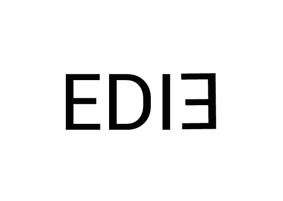
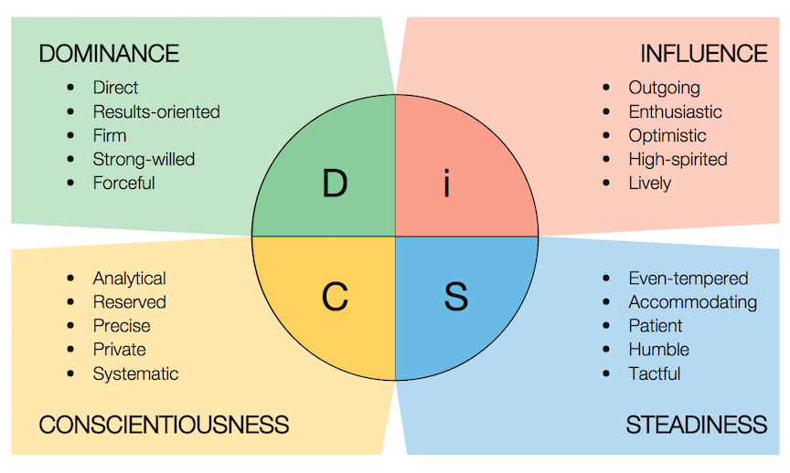

DISC is a behavior assessment tool based on the DISC theory of psychologist William Moulton Marston, which centers on four different behavioral traits: dominance, inducement, submission, and compliance. This theory was then developed into a behavioral assessment tool by industrial psychologist Walter Vernon Clarke.

DISC is often described as a "Personality Test". In reality, DISC is really more like a "personality profiling system" which is why we call our profiles the DISC Personality Profile.
A DISC Profile utilizes a method for understanding behavior, temperament, and personality. A DISC Profile provides a comprehensive overview of the way that people think, act, and interact. It is the most widely used profiling tool of its kind, and is supported by decades of validation and reliability studies.
Dr. William Moulton Marston developed the DISC assessment as a tool to measure four primary behavioral traits:
* Dominance (D)
* Influence (I)
* Steadiness (S)
* Conscientiousness (C)

Examples
Subject AObserved behaviors: Assertive, louder voice, big gestures, fast-paced
People-reading: Likely a D or an i
Observed behaviors: Questioning, results focused, direct, intentional
People-reading: Likely a D (not an i)
Possible responses: Let the conversation get loud without worrying that it signals anger, get to the point fast, suggest an action
Subject B
Observed behaviors: Soft voice, thoughtful and calm
People-reading: Likely a C or an S
Observed behaviors: Warm greeting, patient, curious about you
People-reading: Likely an S (not a C)
Possible responses: Keep the conversation diplomatic, show sincere appreciation, suggest getting others involved, offer reassurances
Why is it helpful to know someone’s DiSC style?
We make judgments about people as soon as we meet them. We can’t help it. These assumptions help us communicate and relate to others. DiSC helps you make better-informed judgments that you can refine as you learn more about a person. Reading someone’s body language, noticing their pacing and listening for the types of questions they ask can all inform your reading of another. These initial hypotheses of style can help you provide better customer service or reduce someone’s stress.
We expect others to pick up on our social signals. If I check the time, that probably means I want you to finish talking. If I act excited, I’d probably welcome you joining me in expressing delight.
We naturally mirror the actions, dress, gestures, volume and tone of others in order to show our affiliation or support of them. Why not consciously use this one aspect of behavior to be a bit more persuasive and build rapport with others?
DISC Test can be used to determine a person’s primary personality type. But a DISC Personality Profile is much more than just a way to label and categorize personality. The DISC Personality Profile identifies patterns of behavior, and can be used to implement solutions for maximizing an individual’s strengths and minimizing weaknesses. The DISC Personality Profile is used in a wide variety of settings, including business, education, sales, coaching, and counselling. Primary applications of the DISC Personality Profile include:
* Strengthening communication skills
* Building leadership abilities
* Diffusing interpersonal conflict
* Choosing attainable goals
* Boosting performance and productivity
* Increasing motivation
* Strengthening workplace skills
* Constructing strong teams
* Cultivating productive work or study habits
* Making smart hiring decisions
Observable behaviors
While humans do love to speculate on the motives and desires of others, DiSC only addresses observable behavior. Perhaps the easiest one to observe is pace. Does he seem in a hurry, does she interrupt, is he direct or blunt? Then we can speculate that this person’s priorities put them in the northern quadrant of the DiSC circle.
You have to listen and watch a bit more closely for the next pair of behaviors around agreeability. Does he act friendly almost immediately? Is she asking questions about who and how? Is he nodding or showing that he wants to welcome you or your ideas? Then we can assume this person is comfortable in the east quadrant of the DiSC circle.
Disc Part1 | May 30，2017